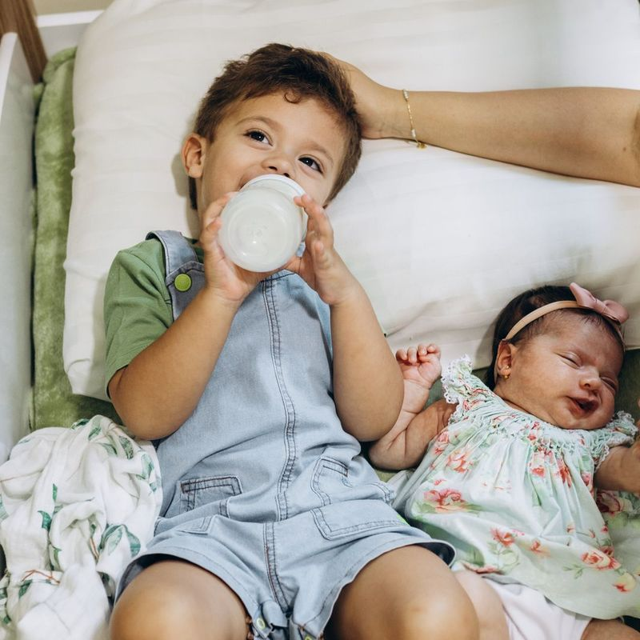

איך עוזרים להם לגדול יחד כששניהם עדיין כל כך קטנים?
התינוק בוכה על הידיים. בדיוק אז הבכור מבקש שתבואו לשחק איתו, וכשאתם אומרים שעכשיו אי אפשר, גם הוא מתחיל לבכות.
אתם רוצים לתת מקום לתינוק החדש בלי שהבכור ירגיש שאיבד את המקום שלו. לדעת איך להגיב לקנאה, לרגרסיות ולמריבות, ולעזור לקשר ביניהם להיבנות לאורך הדרך. כדי לעשות את זה, צריך להבין מה עובר על הילד שהופך לאח גדול, במיוחד כשהוא עדיין קטן בעצמו.
באיזה שלב אתם עכשיו?
בהיריון
אתם רוצים להכין את הבכור לקראת התינוק, אבל לא בטוחים מה הוא באמת מסוגל להבין.
אחרי הלידה
התינוק כבר כאן, והבכור נעשה צמוד יותר, בוכה יותר או חוזר להתנהגויות שכבר עברו.
כשהם גדלים
הם אוהבים ורוצים זה את זה אבל גם חוטפים, דוחפים ורבים על כל דבר.
בכל אחד מהשלבים האלה הקשר ביניהם נבנה. הוא נבנה מתוך מאות רגעים קטנים שמתרחשים ביניהם וביניכם, הרבה אחרי יום הלידה והמפגש הראשון.
מה קורה לילד
גם עבורו זו התחלה חדשה
כשנולד תינוק, לא רק אתם הופכים להורים לשניים. הילד שלכם הופך בפעם הראשונה לאח.
עד עכשיו הוא הכיר משפחה שבה הוא הילד היחיד. פתאום יש בבית תינוק שלא הולך לשום מקום, שזקוק להרבה זמן וידיים ומשנה את השגרה שהכיר.
גם אם הוא חיכה לתינוק, ליטף את הבטן ושמח לפגוש אותו, הוא עדיין אינו יכול להבין מראש איך ירגיש כשהשינוי יהפוך לאמיתי. הוא יכול לאהוב את התינוק ובאותו הזמן להתגעגע לחיים שהיו לפניו.
בהיריון
למה קשה להכין ילד קטן למה שעומד לקרות?
מילים כמו ״עוד מעט״, ״כשהתינוק ייוולד״ או ״בעוד כמה חודשים״ אינן ברורות לילדים צעירים כפי שהן ברורות לנו. הם גם אינם יכולים לדמיין באמת:
- כמה התינוק יבכה.
- כמה זמן הוא יהיה על הידיים.
- איך השגרה בבית תשתנה.
- למה אמא לא תמיד תהיה פנויה.
- מה פירוש הדבר להיות ״אח גדול״.
ההכנה אינה יכולה למנוע כל קושי. היא נועדה להפוך חלק מהשינוי לפחות מפתיע ולתת לילד מילים למה שעומד לקרות.
כשאתם אומרים לו ״בקרוב יהיה לך אח״, מה אתם חושבים שהוא מדמיין?
אחרי הלידה
ולמה מגיעות תגובות דווקא אחרי הלידה?
לפעמים הימים הראשונים עוברים בשקט, ורק לאחר כמה שבועות מתחיל השינוי. הבכור עשוי:
- לבקש יותר ידיים ועזרה.
- להתקשות בפרידות או בשינה.
- לבכות יותר מהרגיל.
- לרצות שוב בקבוק, מוצץ או עזרה בפעולות שכבר עשה לבד.
- לכעוס עליכם או על התינוק.
- לבדוק שוב גבולות שכבר היו ברורים.
הילד בודק איך נראית המשפחה עכשיו: האם עדיין רואים אותו, מה נשאר כפי שהיה ואיך הוא מוצא את מקומו בתוך המציאות החדשה. לא תמיד מדובר בניסיון ״למשוך תשומת לב״.
מה משתנה כשההפרש קטן
כשמדובר בילדים צמודים, הבכור עדיין קטן בעצמו
קל להסתכל על הילד ליד התינוק החדש ולראות פתאום כמה הוא גדול. אבל הבכור שלכם אולי רק בן שנה וחצי או שנתיים. גם הוא עדיין זקוק לעזרה, לקרבה, לתיווך ולנוכחות שלכם.
הוא לא תמיד יכול לחכות רק מפני שהתינוק צעיר יותר. הוא גם לא אמור לוותר תמיד מפני שהוא ״הגדול״.
הוא הפך לאח גדול, אבל הוא לא הפסיק להיות ילד קטן.
הוא לא איבד את האהבה שלכם, אבל הוא כן איבד משהו אחר: את הזמינות המלאה, את התחושה שאתם תמיד פנויים ואת המקום שבו רוב תשומת הלב הייתה מופנית אליו.
כשמצטרף תינוק למשפחה, לא נולד רק אח קטן. גם הילד הבכור מקבל מקום חדש שלא בחר בו וצריך ללמוד איך לחיות בתוכו. וב״הורות בדאבל״ שניהם עדיין קטנים. אחד זקוק לכם כי הוא תינוק, והשני זקוק לכם כדי להרגיש שלא איבד את המקום שלו.
שניים קטנים
מה הופך את המציאות עם צמודים למורכבת במיוחד?
- שניהם עדיין זקוקים לעזרה פיזית.
- שניהם מתקשים לחכות.
- הבכור עדיין לא תמיד יכול להסביר מה הוא מרגיש.
- הצרכים שלהם מתנגשים פעמים רבות.
- קשה לייצר זמן נפרד לכל אחד.
- ההורים נדרשים לבחור שוב ושוב למי לגשת קודם.
בתוך כל זה עולה גם תחושת האשמה: אולי הבכור מקבל פחות מדי. אולי התינוק מחכה יותר מדי. אולי לא הצלחנו לתת לאף אחד מהם את מה שהיה צריך.
אבל חלוקה הוגנת לא תמיד נראית כמו חלוקה שווה. כל ילד זקוק למשהו אחר, ברגע אחר.
מה אם הקנאה היא הדרך של הילד לבדוק אם עדיין יש לו מקום אצלכם?
על הקנאה
אז האם הקנאה אומרת שמשהו לא בסדר בקשר ביניהם?
לא. קנאה יכולה להופיע גם בתוך קשר שיש בו אהבה, קרבה וסקרנות.
הילד יכול לנשק את התינוק בבוקר ולכעוס כשהוא על הידיים שלכם אחר הצהריים. הוא יכול לרצות לשחק איתו ובאותו הזמן לחטוף ממנו צעצוע. אלה לא רגשות שסותרים זה את זה.
הקנאה היא רגש שצריך להבין ולתת לו מקום בלי לאפשר פגיעה.
האם אתם ממהרים לומר ״אבל אתה אוהב את אחיך״ דווקא ברגע שבו הבכור כועס עליו?
כשהם גדלים
ומה קורה כשהם מתחילים לריב?
כשהתינוק גדל ומתחיל לזחול, לקחת צעצועים ולהיכנס למשחק של הבכור, הקשר משתנה שוב. עכשיו הם כבר לא רק אח גדול ותינוק. הם שני ילדים עם רצונות משלהם. הם יכולים לריב על:
- אותו צעצוע.
- המקום לידכם.
- מי נכנס ראשון.
- מי קיבל את הכוס הכחולה.
- משחק שאחד בנה והשני הרס.
- תשומת הלב שלכם.
המריבות אינן בהכרח סימן לכך שהקשר ביניהם אינו טוב. הן גם המקום שבו הם מתחילים ללמוד על גבולות, תסכול, תיקון והחיים לצד אדם נוסף.
מה שאני רואה
למה ״תוותר לו, אתה הגדול״ לא תמיד עוזר?
כשאנחנו מבקשים מהבכור לוותר שוב ושוב, הוא עלול להרגיש שהמקום החדש שלו במשפחה מגיע עם מחיר: הצעיר מקבל, והוא אמור להבין. אבל גם לבכור מותר לרצות את הצעצוע שלו, לשמור על משחק שבנה ולהתקשות לחלוק.
ומצד שני, גם הצעיר אינו תמיד ״הקטן שלא מבין״. ככל שהוא גדל, גם הוא יכול ללמוד גבולות ולהתחשב באחיו.
המטרה היא לראות מה כל אחד צריך וללמד אותם בהדרגה איך להיות יחד, בלי לשפוט מי צודק בכל מריבה.
במריבה האחרונה ביניהם: מי התבקש לוותר רק בגלל הגיל שלו?

אם אתם עדיין בהיריון ורוצים לעשות צעד ראשון, יצרתי את:
״להכין את הלב״
מדריך קצר ללא עלות שיעזור לכם להתחיל את ההכנה הרגשית לקראת הצטרפות של אח חדש. הוא מתאים להורים שרוצים להבין איך לדבר עם הילד על התינוק המתקרב ולהתחיל להפוך שינוי גדול למשהו מעט יותר ברור ומוכר.
אני רוצה לקבל את ״להכין את הלב״המדריך ללא עלות. לאחר מילוי הפרטים הוא יישלח לכתובת הדוא״ל שלכם.
ומה אחרי
ההכנה בהיריון היא רק תחילת הדרך
ההיריון מעלה שאלות על ההכנה. אחרי הלידה מגיעות שאלות אחרות:
- מה עושים כשהבכור מבקש אותי בזמן ההנקה?
- איך מגיבים לרגרסיה?
- איך נותנים מקום לקנאה בלי להיבהל ממנה?
- למי ניגשים קודם כששניהם בוכים?
- איך עוצרים מכה או חטיפה בלי לבחור צד?
- איך עוזרים לקשר ביניהם להיבנות עם הזמן?
אלה בדיוק הרגעים שבהם ״הורות בדאבל״ דורשת כלים אחרים: להבין מה כל ילד צריך, לדעת איך להגיב כשהצרכים שלהם נפגשים ולהוביל את הרגע בלי לנסות להתפצל לשניים.
בשביל הדרך השלמה, מההיריון ועד היחסים בין האחים, יצרתי את המדריך הדיגיטלי:
״לגדול ביחד״
מדריך להורים שרוצים להכין את המשפחה לתינוק החדש, לעבור את השבועות הראשונים עם יותר הבנה ולבנות את היחסים בין האחים מתוך חיבור והובלה הורית.
אני רוצה לעזור להם לגדול ביחדמה תלמדו במדריך?
להתכונן עוד בזמן ההיריון
איך לדבר על התינוק, להכין את הבכור לשינויים ולחשוב מראש על התקופה שאחרי הלידה.
לעבור מילד אחד לשניים
איך להחזיק את הצרכים של התינוק בלי לאבד בדרך את המקום של הבכור.
להתמודד עם הרגעים שבהם שניהם צריכים אתכם
איך לחשוב למי לגשת קודם ואיך לעזור גם לילד שנדרש לחכות.
להבין שינויים בהתנהגות
איך להסתכל על היצמדות, בכי, קושי בשינה או חזרה להתנהגויות קודמות אחרי הלידה.
לתת מקום לקנאה
איך לא להיבהל מרגשות מורכבים ואיך לעזור לילד לבטא אותם בלי לפגוע.
לתווך את היחסים בין האחים
איך להגיב לחטיפות, מכות ומריבות בלי להפוך את הבכור תמיד לאשם או לדרוש ממנו לוותר.
לבנות הובלה הורית בתוך המציאות החדשה
איך ליצור דרך משפחתית שמתאימה לשני הילדים ולערכים שלכם.
מסלול אחד, מההיריון ועד היחסים ביניהם
בהיריון
להכין את הילד ואת הבית לקראת השינוי.
אחרי הלידה
לתת מקום לשני הילדים כששניהם זקוקים לכם.
כשהתינוק גדל
להבין קנאה, רגרסיות ושינויים בהתנהגות.
כשהם מתחילים לשחק ולריב
לתווך את הקשר בלי לבחור צד ובלי לדרוש מהבכור לוותר תמיד.
הורים מספרים

אם עוד לא הכרנו
שקמה דגרי
אני שקמה דגרי, מדריכת הורים ויועצת שינה מוסמכת לגיל הרך, בוגרת מצטיינת בהכשרות להדרכת הורים ולייעוץ שינה בגישה ההוליסטית, ואמא לצמודים בהפרש של שנה וחודש.
מתוך החיים עם שני קטנטנים והעבודה עם משפחות יצרתי את שיטת ״הורות בדאבל״, דרך שעוזרת להבין מה כל ילד צריך ולדעת איך להגיב גם כששניהם צריכים אתכם יחד.
אני בעלת תואר ראשון במדעי ההתנהגות ותואר שני בייעוץ ארגוני, ומנהלת את קהילת ״אמאל׳ה צמודים״, שבה חברים יותר מ־300 הורים. את ״לגדול ביחד״ כתבתי מתוך הידע המקצועי שלי ומתוך המציאות שאני מכירה גם מהבית: להפוך לאמא לשניים כשהבכור עדיין קטן, ללמוד לחלק את עצמי ביניהם ולראות את הקשר שלהם משתנה יחד איתם. עוד עליי · הליווי האישי
למי המדריך מתאים?
- להורים שנמצאים בהיריון שני.
- למשפחות שנמצא בהן תינוק חדש לצד פעוט.
- להורים שמתמודדים עם קנאה או שינוי בהתנהגות אחרי הלידה.
- למי ששני הילדים צריכים אותם פעמים רבות באותו הרגע.
- להורים שרוצים לדעת איך להגיב למריבות בלי לבחור צד.
- למי שרוצים לבנות את הקשר בין האחים לאורך זמן.
המדריך נכתב מתוך המציאות של משפחות עם ילדים צמודים, אבל חלקים רבים ממנו יכולים להתאים גם למשפחות עם פער גדול יותר.
גם אחים קרובים רבים, מקנאים ורוצים לפעמים להתרחק זה מזה
המטרה היא שתדעו:
- לתת מקום לכל אחד מהם.
- להבין מה עומד מאחורי הקנאה.
- לעצור פגיעה בלי להדביק תפקידים.
- לא להפוך את הבכור תמיד לזה שצריך לוותר.
- לעזור להם לחזור לקשר גם אחרי ריב.
אפשר לבנות בבית את הדרך שבה הם ילמדו להיות יחד, גם אם את הקשר עצמו הם יבנו בעצמם.
שאלות נפוצות
מתי כדאי להתחיל להכין את הילד לקראת התינוק?
ההכנה אינה שיחה אחת, אלא תהליך שנבנה בהדרגה. המועד והדרך תלויים בגיל הילד, בשלב ההיריון ובמידת העניין שהוא מראה. אין צורך להציף אותו במידע מוקדם מדי, אבל כן כדאי לתת לו זמן להכיר את השינוי בקצב שמתאים לו.
הילד שלי עדיין קטן. האם הוא בכלל מבין שעומד להיוולד תינוק?
גם אם הוא עדיין אינו מבין מהו היריון או מה באמת ישתנה, הוא מרגיש שמשהו קורה סביבו. ההכנה בגיל צעיר צריכה להיות פשוטה, מוחשית וקשורה למה שהוא יפגוש בבית.
מה ההבדל בין ״להכין את הלב״ ל״לגדול ביחד״?
״להכין את הלב״ הוא מדריך קצר ללא עלות שמתמקד בצעד הראשון של ההכנה הרגשית לקראת אח חדש.
״לגדול ביחד״ הוא מדריך מלא שמלווה את הדרך מההיריון, דרך השבועות הראשונים עם התינוק ועד לקנאה, למריבות וליחסים בין האחים.
הבכור שמח לקראת התינוק. עדיין צריך להכין אותו?
כן. שמחה וציפייה אינן אומרות שהשינוי יהיה פשוט. אפשר להתרגש לקראת התינוק וגם להתקשות כשהוא מגיע ותופס מקום ממשי בבית.
האם רגרסיה אחרי הלידה היא נורמלית?
ילדים רבים מבטאים את ההסתגלות לשינוי דרך יותר בכי, צורך בעזרה, היצמדות או חזרה להתנהגויות קודמות. לא כל שינוי נובע בהכרח מהתינוק, אבל כדאי להסתכל עליו בתוך התמונה המשפחתית החדשה.
למה הילד חזר להתעורר בלילה או להתנהג כמו תינוק אחרי הלידה?
הצטרפות של אח חדש היא שינוי גדול, ולעיתים ילדים מבטאים את הצורך בקרבה דרך השינה, פרידה מחיתולים, היצמדות או בקשה לעזרה בדברים שכבר עשו לבד. במקום למהר להחזיר עצמאות, כדאי לבדוק איזה ביטחון וחיבור הילד מבקש כרגע.
מה עושים כשהבכור אומר שהוא לא אוהב את התינוק?
אין צורך לשכנע אותו מיד שהוא כן אוהב. אפשר לאפשר לו לבטא כעס, אכזבה או געגוע למה שהיה, ובמקביל לשמור על גבולות ברורים סביב פגיעה. במדריך נעמיק בדרך שבה מגיבים לרגשות האלה.
הילד הבכור מרביץ לתינוק. איך מגיבים?
קודם כול עוצרים את הפגיעה ושומרים על התינוק, בלי להדביק לבכור תווית של ילד אלים או רע. אחר כך עוזרים לו לבטא את מה שלא הצליח לומר במילים ובודקים כיצד אפשר לצמצם מצבים שבהם הוא נשאר לבד מול התינוק כשהוא מוצף.
האם צריך להכריח אותם לחלוק?
שיתוף הוא יכולת שמתפתחת בהדרגה. לא כל צעצוע חייב להיות משותף, ולא נכון לצפות מהבכור לוותר בכל פעם מפני שהוא הגדול. המדריך עוזר להבין מתי להתערב ואיך לתווך את הרגע.
המדריך מתאים גם אם הילדים כבר רבים?
כן. הוא אינו מיועד רק לתקופת ההיריון והלידה, אלא גם לשלב שבו התינוק גדל והיחסים בין האחים נעשים פעילים ומורכבים יותר.
האם צריך לקרוא את כל המדריך ברצף?
לא. אפשר להתחיל מהשלב שבו המשפחה נמצאת עכשיו ולחזור לפרקים אחרים בהמשך. אם אתם בהיריון, התחילו מההכנה. אם התינוק כבר נולד, אפשר לעבור ישירות לחלק שמתאים למציאות הנוכחית.
ומה אם אנחנו זקוקים להתאמה אישית?
אם כמה קשיים מתרחשים יחד, אם כל ילד מגיב בצורה שונה מאוד או אם ניסיתם כלים ולא ברור למה הם אינם עוזרים, יכול להיות שליווי אישי יתאים יותר.
רוצים דרך שתלווה אתכם גם אחרי שהתינוק יגיע?
״לגדול ביחד״ יעזור לכם להתכונן לשינוי, להבין מה עובר על הבכור ולדעת איך להגיב לקנאה, לרגרסיות ולמריבות, מההיריון ועד היחסים שנבנים בין האחים. המדריך הדיגיטלי המלא:
149 ₪ אני רוצה לעזור להם לגדול ביחדהגישה נשלחת באופן אישי, בדרך כלל בתוך זמן קצר בשעות הפעילות ולא יאוחר מיום עסקים אחד.
הגישה ניתנת לצפייה באמצעות כתובת הדוא״ל שאושרה ב־Google Drive. המדריך אינו ניתן להורדה או להעברה.
בלחיצה על כפתור הרכישה אתם מאשרים שקראתם והסכמתם לתנאי השימוש, הרכישה, האספקה והביטולים ולמדיניות הפרטיות.